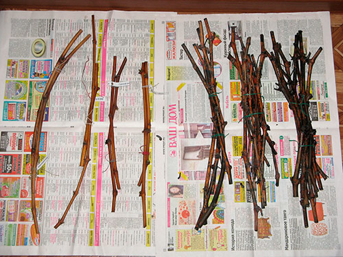

Весняна посадка найбільш сприятлива з таких причин:
Легше і швидше відбувається вкорінення саджанців, так як попереду більше трьох місяців
гарантованого тепла. Восени можуть рано початися заморозки, коли виноград ще не встиг
адаптуватися. Це часто є причиною вимерзання саджанців;
Навесні в тканинах рослин посилюється сокорух, відбувається швидкий ріст коренів, листя і
пагонів. В зиму виноград вже увійде готовою вкоріненою рослиною;
Виноград, посаджений весною, починає плодоносити на рік раніше, ніж кущі осінніх посадок.
Які саджанці винограду можна використовувати для весняної посадки?
Є два шляхи отримання посадкового матеріалу: купити в спеціалізованому магазині або підготувати живці
самостійно. Для посадки нових сортів за матеріалом краще звернутися до професіоналів, а якщо ви хочете
розмножити ваш виноград, то саджанці можна отримати від старої лози.
Як правильно підготувати живці?

Живці, або як їх ще називають, чубуки, нарізають при осінній обрізці винограду. Потрібно вибирати лозу
з живими зачатками бруньок. Маточні кущі повинні бути обов’язково здоровими і врожайними. Нарізку
роблять у вересні, коли ймовірність ушкодження бруньок мінімальна.
Знаходимо визрілу лозу діаметром в 1 см (вона має бути світло-коричневого відтінку і теплою
на дотик) і нарізаємо її на живці;
Кожен живець повинен мати 4-7 міжвузлів, щоб навесні ви змогли зрізати хворі ділянки,
залишаючи найбільш здорову частину чубука;
Живці потрібно замочити на 12-24 години у воді, а потім витримати 30 хвилин в розчині
марганцю або мідного купоросу;
Просушіть саджанці на сухому папері і упакуйте в поліетилен для зимового зберігання.
Перед зберіганням живці необхідно групувати і зв’язати по кілька штук. Всі сорти краще маркувати
заздалегідь. Пучки викладаються на суху поверхню для провітрювання, щоб під час зберігання вони не
покрилися цвіллю або гниллю
Перед тим, як опустити живці в льох для зберігання, їх слід замочити на добу в чистій воді. Після
виноград потрібно витримати в теплому розчині марганцю близько 30 хвилин.